Page 1 / 原始页码 845
第12篇 动物的多样性
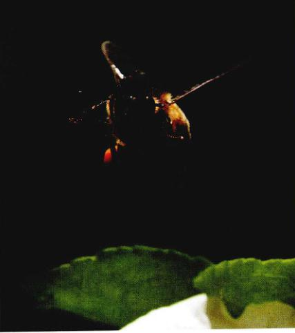
蜜蜂是恒温动物 它能够通过调节飞行肌的代谢率使体温维持在一个狭窄的范围内。
蜜蜂如何散热
陆生动物面临的最大问题之一就是它们生活环境的温度总在不断变化。为什么温度的变化是个问题呢？因为动物体内的许多酶和调节蛋白 (regulatory proteins) 靠弱化学键 (weak chemical bonds) 维系它们的结构，温度的变化很容易破坏这些键，改变酶或调节蛋白的构型并干扰它们的功能，即使几度的升降也会对新陈代谢产生巨大的影响，而温度的剧变则可能是致命的。
陆生动物采用了两种很不一祥的方法来克服环境温度变化这个问题。一种情况是，许多物种进化形成了始终将体温维持在一个狭窄范围的能力——无论环境温度如何变化。我们把这类动物叫恒温动物 (endotherm)。鸟类和哺乳类是这种类型的代表，而一些无脊椎动物也是恒温动物。由于要维持体温恒定的代价是相当大的（摄入食物的 90% 多要花在产生热量上），所以大多数动物选择了另一种方法——让体温随环境温度变化而变化，这种动物叫变温动物 (ectotherm)。
想象在一个晴朗凉爽的早晨，阳光在一片高山草甸上，蜜蜂和蝴蝶在花丛中飞舞。一片云挡住了温暖的阳光。这时蝴蝶会马上停靠在地上等待那给予它足够热量飞行的阳光再次出现，而蜜蜂却不是如此。它们还不停地在花丛中穿梭，完全没注意到和煦的阳光已被遮挡。蜜蜂是怎样做到这一点的呢？原来，它们是极少的几种恒温的无脊椎动物之一。飞行的时候，不管周围空气温度如何，它们都能保持体温相对恒定。
蜜蜂或者其他恒温动物是如何产生维持体温的热量的呢？一个动物摄入食物中的 75% 的化学能都会在新陈代谢中以热量的形式散发掉。因此，恒温动物不需要另外的代谢途径来产热，而是通过增加代谢物消耗途径中的热流，使原有的代谢反应更活跃。
Page 2 / 原始页码 846
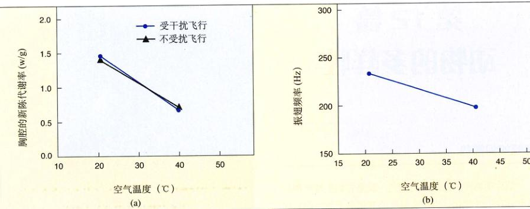
空气温度对代谢率和振翅频率的影响 (a) 当空气温度由 20℃上升到 40℃时，代谢率可通过测定受到干扰而飞行的蜜蜂（图中的点）和不受干扰的蜜蜂（图中的三角形）的 CO₂ 排放量来确定。两种情况下代谢率都随着溫度的升高而下降。(b) 振翅频率由一台数字化磁带记录仪的测量而测得的。振翅频率随着溫度的上升而下降。
观 察
通过比较非洲蜜蜂和欧洲蜜蜂飞行期间的新陈代谢率，Jon Harrison (亚利桑那州立大学) 和 H.Glenn Hall (佛罗里达大学) 发现，小幅度的温度增加与飞行代谢率和振翅频率实质性降低有关。这一结果引发了如下的假说：蜜蜂也许能通过改变飞行肌的活力而改变代谢率，由此进行体温调节。尽管如此，人们观察到的这种联系也可能另有解释。该研究中空气溫度的变化是以一天之内或几天之间的温度变化为基础的。也许在比较温暖的午后飞行的蜜蜂和在较寒冷的天气里飞行的蜜蜂的年龄或基因组成不一样。所以，人们需要用一个设计可控制的实验来严格验证这一假说。
实 验
为了检验这一假说，Harrison 博士和一组研究人员把蜜蜂随机地放在空气温度为 20~40℃ 不等的环境中，并测量蜜蜂胸部和腹部的温度、代谢率和振翅频率。蜜蜂的体温由一支细小的反应快速的微型探针测得。代谢率通过使流速一定的空气流经蜜蜂的“飞行舱”，然后测量蜜蜂排放的二氧化碳量测得。振翅频率则用麦克风、录音机和声音编辑软件来测量。
结 果
飞行中的蜜蜂能和大黄蜂一祥改变胸部和腹部间的热传递吗？如果蜜蜂通过胸部和腹部间的热传递来调节体温，那么当蜜蜂在较高温度下飞行时，应该有很多的热量由胸部传到腹部；而当寒冷时热传递会很少。在这个试验中，腹部的温度变化远比空气的温度变化要小得多。显然，蜜蜂的体温调节与大黄蜂不一样。
Page 3 / 原始页码 847
第 44 章 无体腔动物
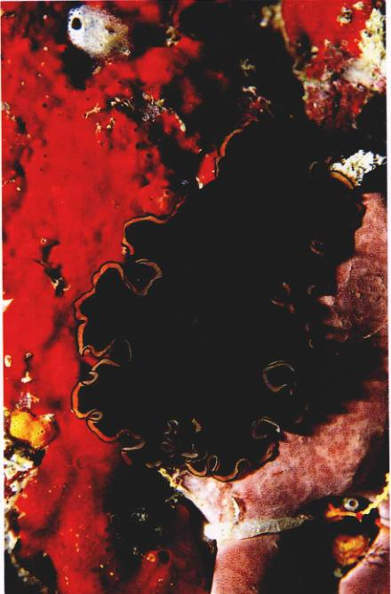
图 44.1 无体腔动物 海生扁形虫。作为进化最早期的无脊椎动物，海生扁形虫有内脏但没有真正的体腔。
我们现在来探讨一下动物惊人的多样性，这种多样性是长期进化的结果。世界上有数以百万计的动物，它们是地球上最繁盛的生物之一。我们能想到的每个地方都有动物栖居，其多样性让人眼花缭乱。我们将从动物界中最简单的成员——海绵、水母和最简单的蠕虫讲起。这些动物没有真体腔，所以叫做无体腔动物 (noncoelomates) (图 44.1)。动物身体的主要结构最初就是从这些动物身上进化来的，而这些结构又为以后的进化奠定了基础。在第45~48章里我们会讨论一些更复杂的动物。尽管动物千差万别，但所有的动物还是有许多共同点。
Page 4 / 原始页码 848
44.1 动物是没有细胞壁的多细胞异养生物
44.1.1 动物的一般特征
动物是地球上的食客或消费者。它们营异养生活，直接或间接依靠植物、可以进行光合作用的原生生物 (如藻类) 和自养细菌获得营养。动物能从一个地方移动到另一个地方觅食，大部分动物摄食后是在消化道内消化食物。
- (1) 多细胞的异养生物：所有的动物都是多细胞异养生物。单细胞的异养生物称为原生动物，曾被划分入动物界，但现在认为它们属于原生生物界，就是在我们在第35章里讨论的那种庞大而种类繁多的一类。
- (2) 形态多样：动物界中几乎所有动物都是无脊椎动物 (invertebrate) (99%)，它们没有脊柱。在估计的1000万种动物中，只有 42,500 种脊椎动物 (vertebrate)。动物的形态各不相同，从小到肉眼无法看到的到大如鲸或巨型乌贼都有。动物界包括约 35 个门，其中大多数门的动物生活在海里。只有很少几个门的动物生活在淡水里，生活在陆地上的则更少。有三个门的动物其生命的大部分时间在陆地上度过，它们是节肢动物门 (例如蜘蛛和昆虫)、软体动物门 (例如蜗牛) 和脊索动物门 (例如脊椎动物)。
- (3) 无细胞壁：动物细胞与其他多细胞生物的细胞不同，它们没有坚硬的细胞壁，因而通常伸缩性很好。除了海绵动物以外，所有动物的细胞都构成了一种结构和功能单位，叫做组织 (tissue)。组织是能够行使特定功能的细胞聚集体，例如肌肉和神经就是一种组织。
- (4) 自主运动：动物有别于其他生物最显著的特点也许就是：它们能运动得比其他生物更快，而运动形式也更加复杂，这与动物细胞的可伸缩性及神经和肌肉组织的进化有直接联系。动物独有的一种非凡的运动形式就是飞行。一些昆虫和脊椎动物的飞行能力高度发达。在脊椎动物里，鸟类、蝙蝠和飞龙 (一种现在已经灭绝的爬行动物) 都是飞行好手，惟一没有飞行种类的陆生脊椎动物是两栖类。
- (5) 有性生殖：大部分动物进行的是有性生殖。动物的卵细胞不能自由运动，通常要比借助鞭毛运动的微小的精细胞大得多。在动物体内，经减数分裂形成的细胞直接发挥配子的功能。这些单倍体的细胞不像植物和真菌那样需要首先进行有丝分裂，而是直接与另一个单倍体的细胞结合形成合子。因此，除了配子以外，动物不像植物那样有单倍体 (配子体) 和多倍体 (孢子体) 交替的世代交替现象 (见 32 章)。
- (6) 胚胎发育：大部分动物的胚胎发育过程很相似。合子首先经历一系列有丝分裂，称为卵裂 (cleavage)，形成一个成实心的胚，叫桑椹胚 (morula)，桑椹胚继续发育为一个中空的胚，叫囊胚 (blastula)。在大部分动物的胚胎发育过程中，囊胚外面的细胞会内陷形成一个中空的囊，囊的一端有一个开口叫胚孔 (blastopore)，这时的胚胎称为原肠胚 (gastrula)。接下来原肠胚细胞的生长发育会形成消化系统，也称为消化道或肠道。不同门的动物胚胎发育的具体过程差别很大，这常常能确定它们之间的进化关系提供重要线索。
动物的分类
一般把动物界划分为两个亚界：①侧生动物亚界 (Parazoa)——身体的绝大部分不对称，既无组织分化，也无器官分化，主要包括海绵动物即多孔动物门；②真后生动物亚界 (Eumetazoa)——身体具有固定形状和对称性，大多数情况下各组织构成器官和系统。尽管两个亚界的动物在结构上很不相同，但它们都起源于同一个祖先，有许多共同的基本特征 (图 44.2)。
Page 5 / 原始页码 849
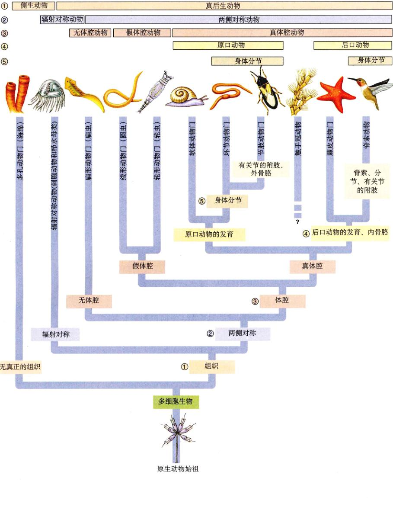
图 44.2 动物界主要类群的系统进化史 动物身体结构的演变在此进化树的分支处已标出，其中最关键的五步是：进化出组织，两侧对称的出现，体腔的出现，原口动物和后口动物的发展和身体节段化。
Page 6 / 原始页码 850
表 44.1 动物界的主要门
| 门 |
代表动物 |
主要特征 |
已知种类 |
| 节肢动物门 |
甲虫、螃蟹、蜘蛛和其他昆虫 |
所有动物中最成功的一门；身体分节，外覆几丁质外骨骼，有成对的分节的附肢；许多昆虫有翅。 |
1,000,000 |
| 软体动物门 |
蜗牛、牡蛎、裸鳃动物 |
身体柔软的真体腔动物，其身体分为三部分：头足部、内脏团和外套膜；许多种类有壳；几乎所有种类都有一种独特的锉状的齿舌；有 35,000 种是陆生的。 |
110,000 |
| 脊索动物门 |
哺乳动物、鱼类、爬行类、鸟类、两栖类 |
身体分节的真体腔动物，有脊索；有背神经索、咽鳃裂，生命的某个阶段有尾；在脊椎动物的发育过程中，脊索被脊椎代替；有 2 万种是陆生的。 |
42,500 |
| 扁形动物门 |
涡虫、绦虫、肝吸虫 |
实心的，身体两侧对称，不分节，无体腔；消化腔只有一端开口。 |
20,000 |
| 线虫动物门 |
蛔虫、蛲虫、钩虫、丝虫 |
假体腔，身体两侧对称，不分节的蠕虫；管状的消化道由口连接到肛门；体形细小，无纤毛；在土壤或水的沉积物中有大量种类分布，有一些种类是重要的动物寄生虫。 |
12,000 |
| 环节动物门 |
蚯蚓、多毛虫、沙蚕、水蛭 |
真体腔，身体呈两侧对称，由一系列体节组成；有完整的消化道，大多种类在每一体节都有刚毛，爬行时用于支撑身体。 |
12,000 |
Page 7 / 原始页码 851
表 44.1 动物界的主要门（续）
| 门 |
代表动物 |
主要特征 |
已知种类 |
| 刺胞动物门 |
水母、水螅、珊瑚、海葵 |
身体柔软，呈胶状，辐射对称；消化腔只有一个开口；有触手，触手周围有能放出刺丝囊的刺细胞；几乎全部是生活在海水里。 |
10,000 |
| 棘皮动物门 |
海星、海胆、沙币、海参 |
后口动物，身体呈辐射对称；有钙板组成的内骨骼；身体分为五部分，有独特的具管足的水管系统；有再生能力；生活在海水里。 |
6,000 |
| 多孔动物门 |
桶状海绵、穿孔海绵、篮式海绵、瓶状海绵 |
身体不对称，无明显的组织与器官的分化；囊状的身体由两层细胞组成，上面有许多贯穿两层的孔；内腔排列着许多叫领细胞的过滤食物的细胞，大多数种类生活在海里 (有 150 种生活在淡水里)。 |
5,150 |
| 苔藓动物门 |
鲍克苔虫、羽苔虫、藻苔虫、苔藓虫 |
微小的水生后口动物，会形成分支状的群落；有一圈环形或 U 形的捕食用的带纤毛的触手，叫触手冠，触手冠通常从坚硬的外骨骼上的孔中穿出。由于该门动物的肛门或直肠在触手冠外部，所以也叫外肛动物。生活在海水或淡水里。 |
4,000 |
| 轮虫动物门 |
轮虫 |
小型水生假体腔动物，口的周围有纤毛围成的冠，似车轮状；几乎所有种类都生活在淡水生活。 |
2,000 |
Page 9 / 原始页码 853
44.1.2 动物身体构造的五个关键性转变
1) 组织的演化
最简单的动物是侧生动物，它们没有组织和器官的分化。这类动物以海绵为代表，它是一团细胞的聚合体，这些细胞间的联系和协作也很少。所有其他的真后生动物，都有由高度分化的细胞构成的组织。组织的出现是动物身体构造的第一个关键性变化。
2) 两侧对称的出现
海绵动物也缺少确定的对称性，经不对称生长成为不规则的细胞团。实际上，其他动物的身体都有确定的形状和对称性。这种对称性可根据一条假想的穿过身体的轴来确定。动物身体的对称性分为两类：一类是两侧对称，一类是辐射对称。
(1) 辐射对称：辐射对称的身体最先在门海生动物中进化出来：刺胞动物门 (也称腔肠动物门，如水母、海葵和珊瑚) 和栉水母动物门 (栉水母)。这两门动物的身体呈辐射对称 (radial symmetry)，它们的身体各部分沿一条中央轴排列，任何一个通过这条对称轴的平面都将身体分为大致互成镜像的两部分 (图 44.3a)。
(2) 两侧对称：所有其他动物都有两侧对称 (bilateral symmetry) 的特征。这种构造使身体有左右之分，且左右两边互为镜像 (图 44.3b)。一个呈两侧对称的身体除有顶 (top) 和底部 (bottom) 之外，也就是我们平时说的背部 (dorsal) 和腹部 (ventral) 之分。这样的身体还有前后之分。一些高等动物，像棘皮动物 (海星)，即使成熟后身体呈辐射对称，它们幼虫期的身体也是呈两侧对称的。
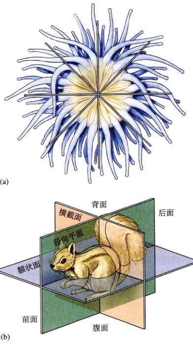
图 44.3 辐射对称和两侧对称的比较 (a) 辐射对称的动物，例如海胆的身体投影在任意一个二维平面上多能被切分为对称的两部分。(b) 像这只松鼠一样的两侧对称的动物则只能被一个平面 (径向平面) 分为对称的两半。
两侧对称是身体结构进化中第二个重要进步。这种独特的对称方式使身体的各个部分可以以不同的方式进化，从而使不同的器官可以分布在身体的不同部位。两侧对称还能使动物更有效地从一地移动到另一地，而辐射对称的动物一般只能固着或被动地飘浮生活。由于两侧对称的动物具有更高的活动性，它们能更有效地寻找食物和配偶，更有效地躲避天敌。
在两侧对称动物进化的早期，那些参与监视环境以及捕食和躲避天敌相关的重要的器官开始在它们的头部集中起来。而执行其他功能的器官则相对后移。从感觉器官的数量和复杂性来看，两侧对称动物远远超过辐射对称动物。
两侧对称动物的神经系统主要以纵向的神经索的形式出现。在进化的早期阶段，神经细胞开始向头部集中。开始的时候，这些神经细胞的主要功能很可能是将头部感觉器官的冲动传递到神经系统的其余部分。这种趋势最终导致了头部和脑的出现，这一过程被称为头部集中化 (cephalization)，同时也导致了这些器官在更高等的动物中占主导地位，并进一步特化。
3) 体腔的出现
动物身体构造进化中的第三个关键变化就是体腔的出现。体腔具有支撑器官、分配物质、辅助发育过程的相互作用等功能，体腔的出现是产生高效率的器官和系统的前提。
Page 10 / 原始页码 854
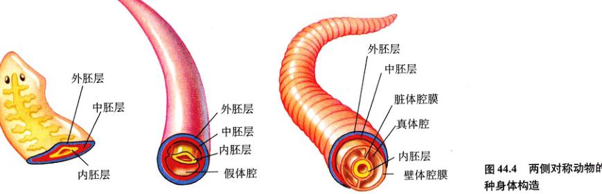
图 44.4 两侧对称动物的三种身体构造 无体腔动物、假体腔动物、真体腔动物。
(1) 体腔的类型：两侧对称动物的身体构造能分为三种基本类型。无体腔动物 (acoelomate) 没有体腔。假体腔动物 在中胚层和内胚层之间有一个假体腔 (pseudocoel)。而第三种身体结构的组织方式是体腔 (coelom)，其中充满了液体，它完全在中胚层内发育形成，而不是在中胚层和内胚层之间发育而来。这样的体腔叫真体腔，具有真体腔的动物叫真体腔动物 (coelomate)。真体腔动物的体腔内，消化道和其他器官都在体腔内悬浮，而真体腔则被一层完全由中胚层发育而来的上皮细胞包围着。覆盖在真体腔外面的那部分上皮叫做壁体腔膜 (parietal peritoneum)，覆盖在真体腔内各器官表面的上皮叫脏体腔膜 (visceral peritoneum) (图 44.4)。
体腔的发展还存在一个问题——循环。假体腔动物通过体腔内液体的搅拌解决这个问题。而真体腔动物的消化道被一层防止扩散的组织包裹着，正像一条固定的蠕虫。真体腔动物是通过循环系统的发展来解决这个问题的。循环系统是由管道组成的把液体运送到身体各部分的网状系统。其中流动的液体，也就是血液，把营养和氧气带到各组织，又从组织中带走废物和二氧化碳。
4) 原口动物和后口动物的进化
两个外观不同的门——棘皮动物门 (海星) 和脊索动物门 (脊椎动物)，以及另外两个小门，都有一些列与其他门动物不同的胚胎学上的特点。由于这些特点极不可能是由几次不同的进化过程得来的，所以人们相信这四门动物有一个共同的祖先。这些动物都属于后口动物 (deuterostome)。其他真体腔动物属于原口动物 (protostome)。后口动物是在 6.3 亿多年前由原口动物进化来的。
Page 11 / 原始页码 855
后口动物和原口动物一样是真体腔动物。但是后口动物在胚胎的发育方式上是与原口动物完全不一样的。在胚胎发育的早期，胚胎是一个由细胞组成的空心的球，其中一部分细胞内陷形成一个开口，称为胚孔 (blastopore)。原口动物的胚孔后来发育成成体动物的口，而肛门则在胚胎的另一端形成。与此相反，后口动物的胚孔发育成肛门，而口则在胚胎的另一端形成 (图 44.5)。
5) 分节现象的出现
动物身体构造的第五个关键性变化就是身体分节 (segmentation)。正如工人可以把一段段预先准备好的管道连在一起，从而更有效地建造隧道一样，身体分节的动物也是由一系列连接的相同的体节组装而成的。在动物发育的早期阶段，存于中胚层中的节段尤为明显，接着外胚层和内胚层的节段也变得明显起来。胚胎早期的分节带来两大好处：
(1) 在环节动物和其他高度分节的动物中，每一节都有能独立继续发育成一套差不多的、成熟的器官系统。对该体任意一节段的损害都不由是致命的，因为其他节段能再生长出可行使损伤部分功能的器官。
(2) 动物的每一体节都能自由移动时，运动变得更加高效，因为动物整体的移动灵活活性提高了。
分节现象 (metamerism)，也叫分节 (segmentation)，是所有高级的动物身体结构组成的基础。一些成熟的节肢动物的体节已经愈合在一起，但在它们的胚胎发育过程中，分节现象通常还是很明显的。尽管成年的脊椎动物的分节现象通常已经难以察觉，但它们的脊柱和肌肉群还是分节的。虽然分节的趋势在很多动物门中都很明显，但真正的分节现象只存在于三门动物中：环节动物门、节肢动物门和脊索动物门。
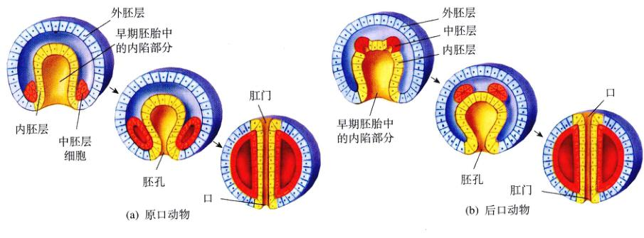
图 44.5 胚孔发育的最终结果 (a) 在原口动物中，胚孔变成了口。(b) 在后口动物中，胚孔变成了肛门。
Page 12 / 原始页码 856
44.2 最简单的动物身体呈两侧不对称
44.2.1 侧生动物
海绵是一种侧生动物 (Parazoa)，这类动物没有组织和器官的分化，也没有确定的对称性。但海绵和其他动物一样，是真正的多细胞动物，这与它的祖先原生动物是不一样的。海绵的身体包括几类明显不同的细胞，这些细胞的活动是松散地相互协调的。以后我们会看到，真后生动物的不同类型细胞之间的协调性增加，而且变得相当复杂。
海绵
多孔动物门中的海产海绵大约有 5000 种，还有约 150 种生活在淡水中。海绵的形状呈花瓶状。海绵壁有三个功能层。第一层，向着体腔内壁的特化的带鞭毛细胞叫领细胞 (choanocyte 或 collar cells)。这些细胞可能排列在整个体腔内壁，而在一些大型的更复杂的海绵上，则排列在一些特定的腔室周围。接下来的这一层是海绵体，它的外层包围着一个由扁平细胞构成的上皮层，这个上皮层的细胞与构成其他门类动物的上皮或表皮层的细胞多少有些相似。在接触到适当的化学刺激时，这一层的部分细胞会收缩，从而引起海绵体上小孔关闭。最后，在这两层之间的主要是一种叫中质 (mesohyl) 的富含蛋白质的凝胶状基质，其中有许多不同种类的变形细胞。另外，许多海绵在这层基质里都有一种由碳酸钙或二氧化硅构成的细小的针，叫骨针 (spicule)，或者是结实的蛋白纤维叫海绵丝 (spongin)，或者两者都有。骨针和海绵丝提高了海绵的强度。洗浴用的海绵就是仿照海绵丝骨骼制成的。
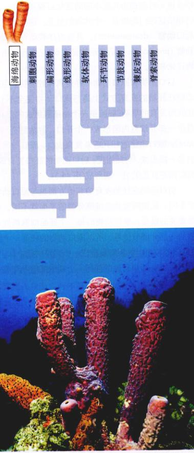
图 44.6 Aplysina longissima 这种美丽的长海绵呈亮橙红色，生活在珊瑚礁深处。顶部的开口就是出水孔。
Page 13 / 原始页码 857
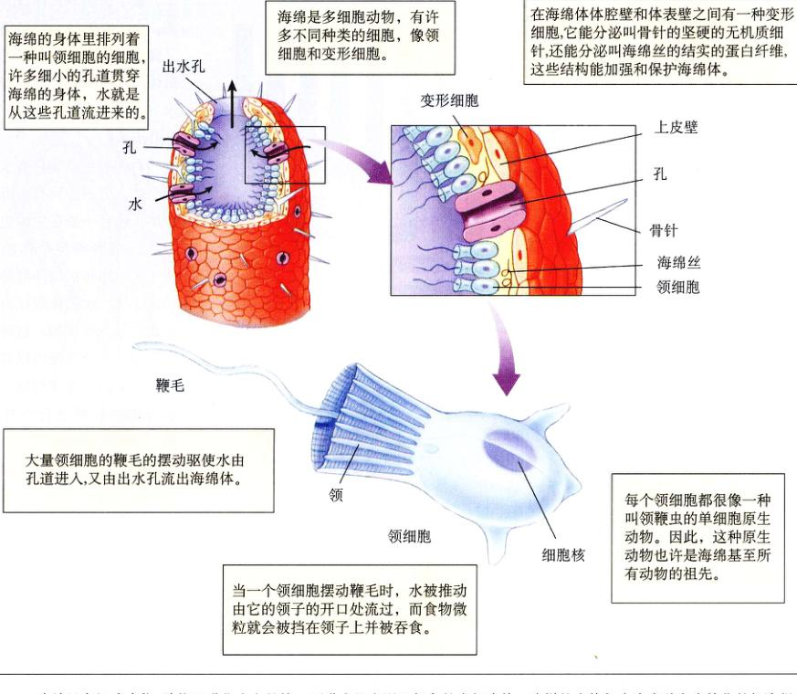
图 44.7 海绵是多细胞生物 动物界进化史上的第一项进步是出现了复杂的多细胞体。这样的个体都由许多种高度特化的细胞组成。
生物 (图 44.7)，这种相似性反映了它的进化起源。围绕体腔的大量领细胞的鞭毛的摆动驱动水由孔道进入，流经海绵体，从而带来食物和氧气，带走废物。每个领细胞都能单独摆动，它们共同产生的压力驱使水由出水孔流出。一些海绵的内壁高度盘曲，增加了内表面积，从而增加了驱动水流的鞭毛的数目。1 cm³ 的海绵每天能推动 20 多升的水量。
(2) 海绵的繁殖：有些海绵在通过丝质网裂后能重新形成新的个体。所以，你也许会认为海绵通常经过断裂成片段来进行繁殖。事实上，如果一个海绵撕裂后，各片段又能重新形成一个新的个体。海绵也进行有性生殖，一些成熟的个体能产生卵子和精子。幼体海绵能在亲代体内完成初期的发育。这些幼体可以自由游动，其外表有大量鞭毛细咆。经历一个短暂的浮游阶段后，它们在一块适宜的附着物上固着下来，开始向成体转变。
Page 14 / 原始页码 858
44.2.2 真后生动物：辐射对称动物
真后生动物亚界 (Eumetazoa) 中，动物在身体构造进化上发生的第一个关键性转变是组织明显分化。这些动物的胚胎出现了两层不同的细胞：外胚层和内胚层。身体的基本构造都来自于这些胚胎组织，由它们进一步分化成身体中更多的组织。通常情况下表皮层 (即表皮) 和神经系统由外胚层发育而来，消化道组织，又称肠表皮 (gastrodermis)，由内胚层发育而来。在表皮和肠表皮之间有一层叫中胶层 (mesoglea) 的胶状物，许多真后生动物的肌肉组织就成这一层里。
真后生动物也进化出了确定的对称性，它们主要分为两类：辐射对称动物和两侧对称动物。辐射对称动物 (Radiata) 有两个门：刺胞动物门 (包括水螅、水母、海葵和珊瑚等；栉水母动物门 (包括栉水母 (Ctenophores))。两门动物的身体都是辐射对称的。所有其他真后生动物都属于两侧对称动物，身体基本呈上呈两侧对称。
1) 刺胞动物门
刺胞动物门 (Cnidarian) (也称腔肠动物) 的大部分种类生活在海里，也有一些生活在淡水里。这些动物的身体结构简单但迷人，基本上是由胶质组成的。它们的机体组成与海绵动物明显不同，虽然它们还没有进化出真正的器官，但它们的身体明显由组织构成。刺胞动物在生活史的大部分时间内，它们都不会活跃地到处移动，而是用围绕在口边的触手捕捉食物，如甲壳类等。
刺胞动物的身体有两种基本形态，水螅体 (polyps) 和水母体 (medusae) (图 44.8)。水螅体呈圆柱状，通常固着在坚硬的物体上，有单体的，也有群体的。水螅体的口面远离它的固着端，通常是朝上的。许多水螅体有几丁质或石灰质 (由碳酸钙构成) 的外骨骼或内骨骼，或者两者都有。只有少数水螅体可以自由飘浮。与此相反，大多数水母体呈伞状，可以自由飘浮。它们的口通常朝下，触手也朝下长在口的周围。由于它们的中胶层很厚又像胶状物，人们通常把水母体——尤其是钵水母纲的水母体——称为水母 (jellyfish)。
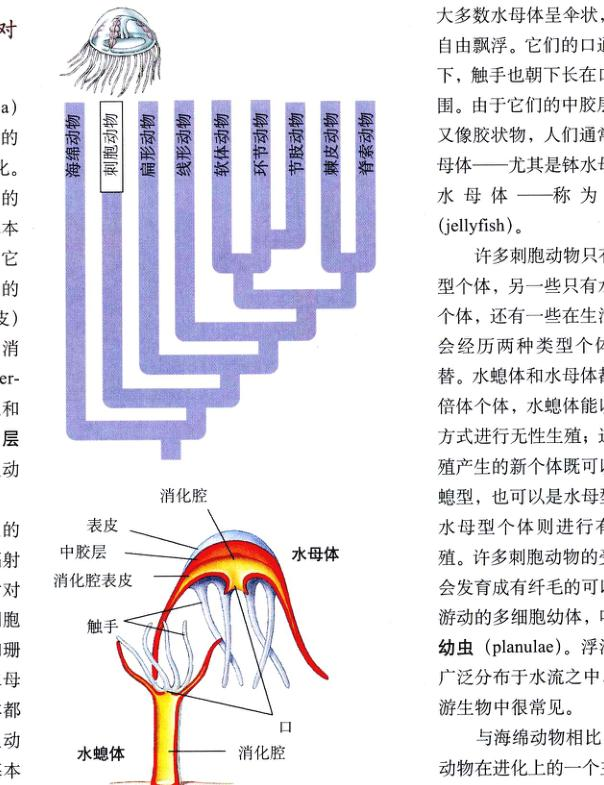
图 44.8 刺胞动物身体的两种形态：水螅体和水母体 许多刺胞动物在生活史中都会经历两种形态个体，但有一些——包括珊瑚和海葵——只有水螅体的一种形态。在两种形态都具有的刺胞动物，这两层细胞被叫做中胶层的一层凝胶状物质分隔开。
Page 15 / 原始页码 859
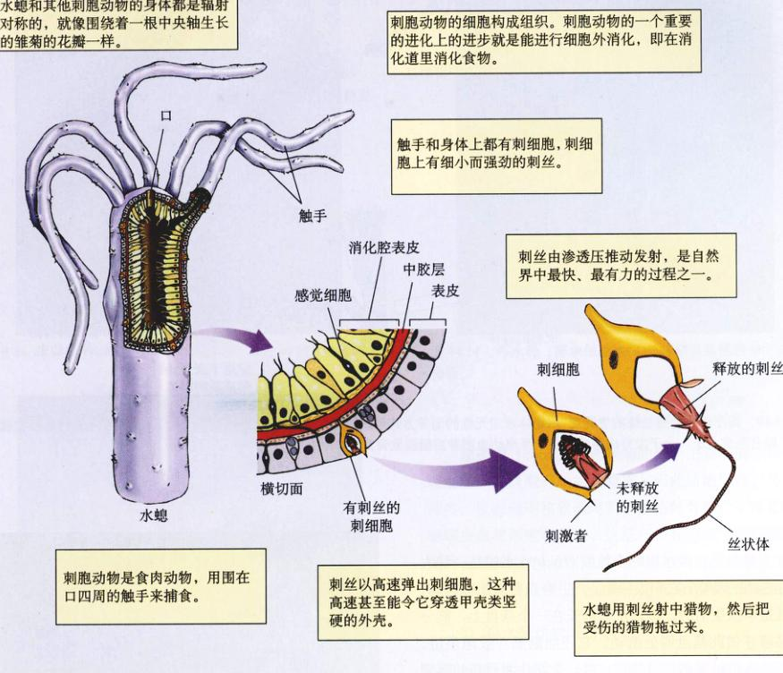
图 44.9 真后生动物都产生了组织分化，身体具有对称性 刺胞动物 (像这只水螅) 的细胞分化形成了组织。体内的消化腔特化用于细胞外消化，即在消化腔内消化食物。刺胞动物的身体也是呈辐射对称的。
其他门类的细胞。每个刺细胞都有一根小而有力的刺丝 (nematocyst)，刺丝是一根卷曲的、丝状的小管，像一根小而有力的“鱼叉”。小管内侧排列着一系列的棘状突起，刺胞动物用触手上的刺细胞的刺丝击中猎物。刺细胞利用水压弹射出刺丝，在射出刺丝以前，刺细胞已经建立了非常高的内渗透压。这一步是通过主动运输在细胞内积累高浓度的离子，同时又保持细胞膜对水的不渗透性来完成的。在一个刺丝尚未射出的刺细胞里，渗透压能达到 140 个大气压之高。
当刺细胞上一个鞭毛状的触发物 (即刺阵) 被刺激时，刺细胞膜变为可透水的膜，于是水便冲入，刺激带刺的刺丝射出。刺丝的释放是自然界中细胞水平上最快的过程之一。刺丝的发射如此具有爆发性，以致连硬的蟹壳都能穿透。刺丝里有些能引起刺痛感的有毒蛋白，所以有些刺胞动物又叫做“带刺的荨麻”。
2) 刺胞动物的分类
刺胞动物有 4 个纲：水螅纲 (水螅)、钵水母纲 (水母)、立方水母纲 (立方水母) 以及珊瑚纲 (海葵、珊瑚虫)。
(1) 水螅纲 (Cnidarians)：水螅。此纲约有 2700 种，大多数种类在其生活史中既有水螅型个体，也有水母型个体 (图 44.10)。大部分种类生活在海里，群居，像数枝螅 (Obelia) 和比较罕见的葡萄牙僧帽水母。有些海生水螅能发光。
Page 16 / 原始页码 860
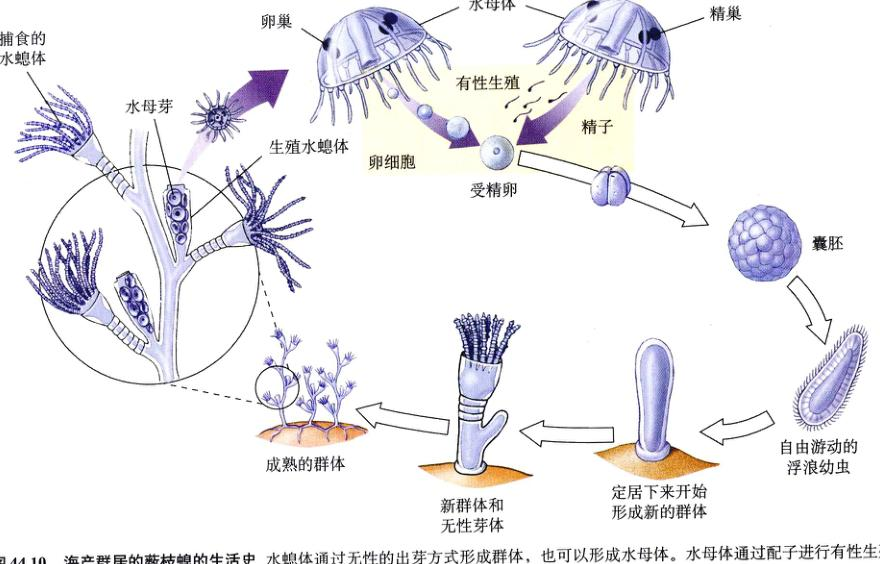
图 44.10 海产群居的薮枝螅的生活史 水螅体通过无性的出芽方式形成群体，也可以形成水母体。水母体通过配子进行有性生殖，配子融合形成合子，合子发育成浮浪幼虫，浮浪幼虫附着后继续发育产生水螅体。
大量生活在淡水里的水螅属 (Hydra) 水螅是一种大家很熟悉的动物，它们很特别，一生中只有水螅体形态，而且是单独生活的。每只水螅都长在一个基盘上，能分泌黏液并借此基盘四处游动。它还能翻筋斗般地前进，弯下身体用触手抓住附着物，再一个筋斗翻到新的落脚点。水螅离开附着物后能飘浮到水面上。
(2) 钵水母纲 (Scyphozoa)：水母。此纲大约有 200 种水母，都是身体呈透明或半透明的海生动物，有些种类的身体呈艳丽的橙色、蓝色或粉红色 (图 44.11)。这些动物一生中大部分时间飘浮在靠近海面的地方。在它们的生活史中，水母体占绝对优势——无论是体型还是复杂程度都远胜过水螅体。水母体呈铃铛状，触手悬垂在身体边缘。水螅型个体小，不明显，结构也比较简单。
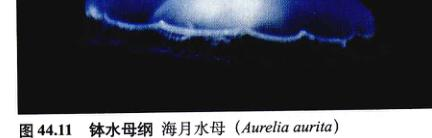
图 44.11 钵水母纲 海月水母 (Aurelia aurita)
(3) 立方水母纲 (Cubozoa)：立方水母。直到不久以前，人们还把立方水母当作钵水母纲的一个属。正如它们的名字所暗示的一样，立方水母是身体呈盒状的水母 (图 44.12)。其水螅体时期不明显，许多种类还没发现有该时期。尽管有些种类可长达 25 cm，但大部分种类只有几厘米长。水母体“盒子”的各个角上都有一只或一组触手。立方水母是游泳好手，也是贪婪的鱼类捕食者。有些种类的螫刺可以致人于死地。
(4) 珊瑚纲 (Anthozoa)：海葵和珊瑚虫。珊瑚纲是刺胞动物门中最大的一个纲，它们被称为“花一样的动物” (希腊语 anthos 就是花朵的意思)。本纲约有 6200 种，在海里过独居或群居生活。当选中像石头一样的附着物后，其身体可自由伸展，其栖息地遍布海域和淡水区域。
Page 18 / 原始页码 862
44.3 无体腔动物是没有体腔的实心蠕虫
44.3.1 真后生动物：两侧对称的无体腔动物
两侧对称动物 (bilaterian) 的特点是，身体构造在进化过程中发生了第二个关键性转变：简单的两侧对称动物。两侧对称使动物身体的某些部分可以高度特化。无体腔动物是最简单的两侧对称动物，它们体内除了消化腔外没有其他体腔。前面我们曾讨论过，所有两侧对称动物在发育过程中都会形成三个胚层：内胚层、中胚层和外胚层。本章我们会重点讨论无体腔动物中的最大的一个门——扁形动物门。
1) 扁形动物门：扁形动物
扁形动物门 (Platyhelminthe) 的动物约有 2 万种。扁形动物身体柔软，呈带状，全身背腹扁平。虽然扁形动物是最简单的两侧对称动物之一，但它们在身体前部有一个确定的头部，也有了真正的器官。它们的身体是实心的，体内惟一的空腔就是消化腔 (图 44.15)。

图 44.15 实心蠕虫的结构 三角涡虫是许多生物实验室里常见的淡水涡虫。
Page 22 / 原始页码 866
44.4 假体腔动物具有简单的体腔
44.4.1 假体腔动物
除了实心蠕虫以外，所有的两侧对称动物都有体腔，这是动物身体结构的第三个关键性转变。有 7 个门的动物具有假体腔 (图 44.4)，它们之间的进化关系还不太清楚，也许在进化中假体腔动物独立出现过多次。假体腔就像一副流体静力骨骼 (hydrostatic skeleton)，由于充满了具有压力的液体，故能维持自身的刚性。动物的肌肉能利用这副骨骼工作，使假体腔动物的行动比无体腔动物更高效。
1) 线虫动物门：蛔虫
线虫和蛔虫构成一大门，即线虫动物门 (Nematoda)，已知种类约有 12,000 种。但科学家估计实际存在的物种数可达这个数字的 100 倍。线虫动物广泛分布于海水和淡水中，数目众多，种类各异。线虫动物门的许多成员是动植物的寄生虫 (图 44.19)。许多线虫动物生活在土壤里，肉眼看不见。据估计，一铲肥沃的土壤平均有 100 万条线虫。
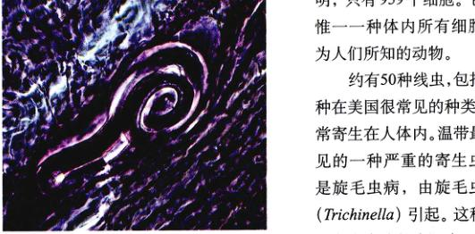
图 44.19 猪肉中被囊的线虫——旋毛虫 Trichinella 这种严重的旋毛虫病可由食用含有幼虫的未煮熟的猪肉或熊肉引起。
2) 轮虫动物门：轮虫
轮虫动物门 (Rotifer) 包括一些常见的小型两侧对称动物，它们主要生活在淡水里，头部有一圈纤毛围成的冠状物。轮虫是假体腔动物，但和线虫动物很不一祥。有些特征表明它们的祖先可能类似于扁形动物。
Page 24 / 原始页码 868
44.5 即将到来的动物分类学革命很有可能改变传统的动物系统进化史
44.5.1 重新审视动物的身体构造是如何进化的
动物身体构造的巨大差异令它很难与一个分类学框架完全吻合。生物学家通常先考察一些看似本质的特征，例如身体分节，拥有真体腔等，然后据此来推断 35 个门动物之间的关系。一般的观点认为，在一个类群的进化过程中，这些特征最有可能被保守。具有同一基本特征的两个门与没有这一特征的其他门相比，二者的亲缘关系更近。图 44.2 提供的进化史就是应用这种方法进行分类的很好例子。
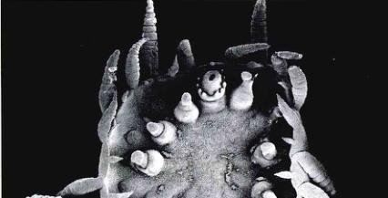
图 44.21 分类学之谜 这只吸口虫，Myzostoma mortenseni，没身体腔，身体分节不完全。这样的生物对分类学来说是一个挑战，它令分类学家重新审视建立在基本特征基础上的传统的动物系统发生学。
分子水平的系统进化史
过去的 10 年中，人们获得了各种动物类群的大量分子序列数据。由这些数据得到的动物进化史与本教材采用的、图 44.2 中提供的传统的动物进化史大相径庭。一种根据核糖体 RNA 的研究得出的动物进化树如图 44.22 所示。它只是一个粗略的轮廓，将来更多的数据会帮助我们解决分类时相互关系的问题。但我们仍然能清楚地看到，以分子水平的系统进化树划分的主要类群间的关系和传统的划分相去甚远。
当前对动物的分子水平的系统进化分析还处于萌芽阶段。以不同分子为基础发展而来的分子水平的系统进化树通常提出不同的进化关系。但这利方法的初级阶段应该是短暂的。预计未来几年人们还会得到大量新的分子数据。随着获得的新数据越来越多，我们希望面临的困惑会减少，能出现一个能够得到大家公认的系统进化树。如果真能这样，相信它会完全不同于传统的观点。
Page 25 / 原始页码 869
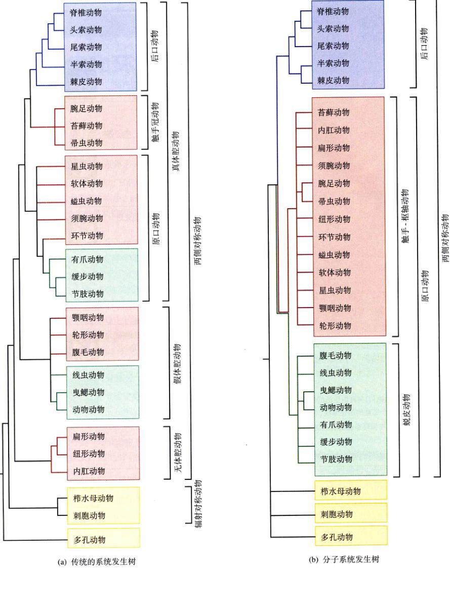
图 44.22 传统的系统进化树与分子系统进化树的比较 (a) 传统的系统发生树是建立在形态学特征的基础上 (引自 L. H. Hyman, 无脊椎动物, 1940)。(b) 目前的系统发生树更多地以分子分析为基础，这是通过比较不同动物门之间核糖体 RNA 的序列差异得到的系统发生树。
Page 26 / 原始页码 870
小 结
44.1 动物是没有细胞壁的多细胞异养生物
- 动物是异养的多细胞生物，通常可以运动。动物都进行有性生殖。动物细胞没有细胞壁，在体内消化。几乎所有的动物都是异养的多细胞生物。
- 动物界分为两个亚界：侧生动物，只有一个身体不对称的多孔动物门；以及真后生动物，其特点是身体对称。
44.2 最简单的动物身体呈两侧不对称
- 海绵 (多孔动物门) 的特征是有一种特化的、有鞭毛的领细胞。它们没有组织，也没有器官，大多数种类身体没有对称性。
- 刺胞动物 (刺胞动物门) 主要生活在海里，它有一种独特的刺细胞，每个刺细胞都有一个叫刺丝的渔叉状装置。
44.3 无体腔动物是没有体腔的实心蠕虫
- 无体腔动物体内除了消化系统外没有其他的体腔，它们是最简单的有器官的动物。
- 无体腔动物中最重要的一门是扁形动物门，扁形动物包括自由生活的扁形动物和营寄生生活的绦虫和吸虫。
- 带状蠕虫 (纽形动物门) 与自由生活的扁形动物很类似，但拥有一个完整的消化系统。它同时还有循环系统，血液在循环系统的管道里流动。
44.4 假体腔动物具有简单的体腔
- 假体腔动物以线虫动物门为代表，它们在中胚层和内胚层之间发育出了一个体腔。
- 轮虫 (轮虫动物门) 是生活在淡水里的微型的假体腔动物。
44.5 即将到来的动物分类学革命很有可能改变传统的动物系统进化史
- 分子数据为我们提供的系统进化史与传统的进化史很不一祥。
问 题
- 动物区别于其他生物的特征是什么？
- 动物界的两个亚界各是什么？它们在对称性和身体结构上有什么区别？
- 海绵动物最有可能是从哪一类祖先进化来的？
- 海绵用来捕食的特化的细胞是什么？
- 海绵的两种生殖方式是什么？海绵幼体长得像什么？
- 浮浪幼虫是什么？
- 扁形动物门的动物有什么样的身体构造？它们营自由生活还是寄生生活？它们如何移动？
- 绦虫和吸虫有什么区别？绦虫如何生殖？
- 为什么说线虫动物的构造在动物界里很独特？
- 轮虫动物如何捕食？
- 吸口虫与哪一种动物的关系最为接近？
媒体资源
- 自然界中的对称性
- 从后端到前端
- 纵切面
- 额平面到冠平面
- 横切面
- 无脊椎动物的特征
- 无脊椎动物
- 海绵
- 辐射对称
- 技能测验：刺胞动物的身体构造
- 两侧对称的无体腔动物
- 学生研究：寄生扁形动物
- 假体腔动物